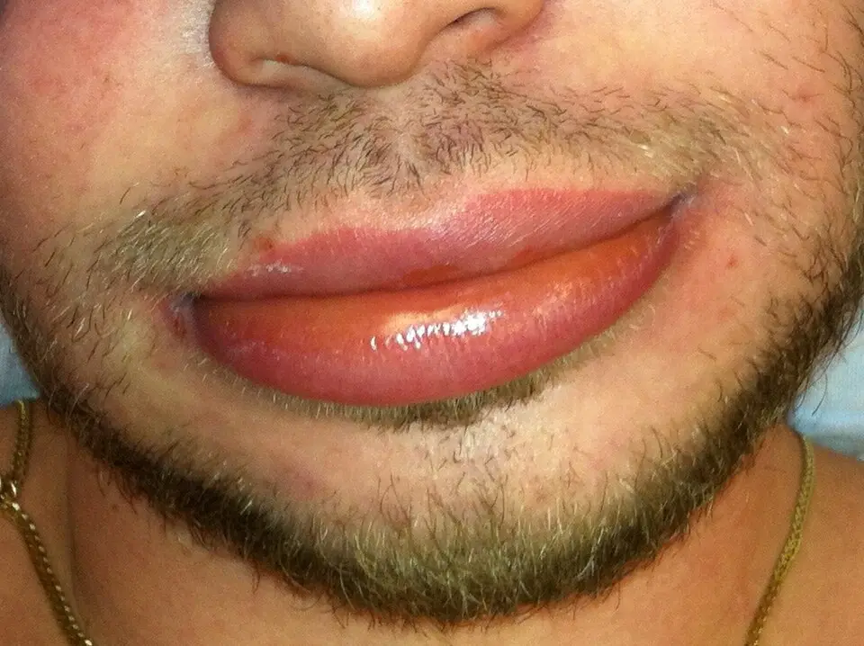

DX.9 — Angioœdème facial
Un visage qui gonfle en quelques minutes ou en quelques heures peut précéder un œdème de la langue ou du larynx, donc une asphyxieS3S4. Le médecin regarde d'abord la voix, la déglutition et la respiration, puis il cherche le mécanisme. L'angioœdème mastocytaire répond à l'adrénaline et aux antihistaminiques, alors que l'angioœdème bradykinique n'y répond pas et exige un traitement spécifiqueS1S11.
1. Définition
Le consensus international DANCE, publié en 2024, définit l'angioœdème comme un gonflement intermittent, localisé et spontanément résolutif du tissu sous-cutané ou sous-muqueuxS10. Le protocole national français de 2024 précise que cet œdème s'installe brutalement, qu'il reste transitoire et qu'il disparaît sans séquelle, parfois après plusieurs joursS3. L'angioœdème facial désigne cette tuméfaction lorsqu'elle siège aux lèvres, aux paupières, aux joues ou à la langueS3. Il déforme le visage par un excès de volume, sans déficit moteur du nerf facial.
2. Épidémiologie (Suisse, puis Europe)
Aux urgences adultes de l'hôpital universitaire suisse étudié, 236 des 531 anaphylaxies modérées ou sévères comportaient un angioœdème, soit 44,4 %S7. La cohorte suisse d'angioœdème héréditaire réunit 135 patients, soit environ 85 % des malades attendus dans le paysS2. Le protocole français estime que 95 % des angioœdèmes sont mastocytaires spontanés, 4 % mastocytaires allergiques et moins de 1 % bradykiniquesS3. Les chiffres disponibles, les personnes exposées et l'évolution spontanée expliquent le rang 🚩 E1.
3. Physiopathologie
Un médiateur vasoactif augmente la perméabilité des capillaires ; le plasma quitte alors le vaisseau et gonfle le derme profond ou la sous-muqueuse. Deux voies dominent. La voie mastocytaire libère de l'histamine en quelques minutes et s'accompagne souvent d'urticaireS6. La voie de la bradykinine s'emballe lorsque l'inhibiteur de la C1 estérase (C1-INH) manque ou lorsqu'un médicament freine la dégradation du peptideS1S4. Le tableau de corrélation associe chaque anomalie à l'examen qui la révèle et au médicament qui la corrige.
4. Démarche diagnostique
Le médecin écarte d'abord la menace vitale : une atteinte de la langue ou des voies aériennes supérieures, puis une anaphylaxieS3S6. Il vérifie ensuite que la tuméfaction est bien un angioœdème, car une cellulite d'origine dentaire (DX.7) ou une tumeur parotidienne (DX.8) gonflent aussi le visage. Il sépare enfin le mécanisme mastocytaire du mécanisme bradykinique, puis l'origine héréditaire, acquise ou médicamenteuseS3. Les diagnostics discriminants portent chacun le signe qui tranche, le piège et la conduite.
5. Anamnèse ciblée et drapeaux rouges
L'interrogatoire reste bref tant que la respiration n'est pas sûre. Il date le début, cherche un allergène dans les minutes qui précèdent et recense tous les médicaments, surtout un inhibiteur de l'enzyme de conversion (IEC)S3S4. Les questions clés portent chacune leur raison physiopathologique. Chaque symptôme est ensuite caractérisé, puis classé typique ou atypique. Les drapeaux rouges imposent chacun une action immédiate.
6. Examen physique ciblé, région par région
Le patient reste assis, car le protocole français proscrit le décubitus dorsal complet lorsque les voies aériennes supérieures sont atteintesS3. L'examen suit l'ordre du danger. Le médecin écoute d'abord la voix et la respiration, puis il inspecte la bouche, la langue et la luette. Il décrit ensuite le visage et cherche sur la peau une urticaire. Il ausculte le thorax, mesure la circulation, palpe l'abdomen et regarde les extrémités et la région génitale. La valeur des signes oriente l'interprétation et fixe la fréquence des réexamens.
7. Approche syndromique
Le tableau se range en cinq syndromes, qui orientent chacun vers une décision. Le syndrome obstructif des voies aériennes supérieures (7.1) impose la protection des voies aériennesS3. Le syndrome anaphylactique (7.2) impose l'adrénaline intramusculaireS6. Le syndrome œdémateux bradykinique isolé (7.3) impose le traitement spécifique de la criseS1. Le syndrome abdominal (7.4) évite une chirurgie inutile, et le syndrome récidivant familial (7.5) conduit au dépistage des prochesS1S3.
8. Diagnostic positif et critères
Le diagnostic d'angioœdème est clinique. Le protocole français de 2024 exige que tous les caractères soient réunis : œdème localisé et transitoire, sans godet, sans inflammation, sans fièvre et sans syndrome inflammatoire biologiqueS3. Les critères qui suffisent et ceux qui ne suffisent pas séparent ensuite l'anaphylaxie, la forme bradykinique héréditaire et la forme médicamenteuse. La classification et la gravité fixent le lieu de soins et le traitement.
9. Examens complémentaires
9.a Aucun examen ne remplace la clinique, et aucun dosage ne retarde un geste d'urgenceS4.
9.b En première intention, le médecin dose la tryptase si une anaphylaxie est possibleS6. Il demande ensuite l'activité fonctionnelle du C1-INH et le C4 devant tout angioœdème isolé ou récidivantS1.
9.c Les alternatives couvrent le nourrisson, le projet de grossesse et l'absence de laboratoire spécialisé.
9.d En deuxième intention viennent le C1q et les anticorps anti-C1-INH, la génétique et le bilan orienté. Le tableau d'interprétation relie chaque résultat à une conduite, et l'endoscopie reste un piège.
10. Arbre décisionnel
- Si la voix change, si la langue gonfle, si un stridor ou une dyspnée apparaissent, alors le médecin appelle l'équipe capable d'intuber et suit la conduite d'urgenceS3.
- Si une urticaire, un bronchospasme, une hypotension ou des troubles digestifs s'associent après un contact suspect, alors il retient l'anaphylaxie et injecte l'adrénaline par voie intramusculaireS6.
- Si l'œdème reste isolé, sans prurit ni urticaire, il cherche la bradykinine.
- Si un déficit en C1-INH est connu, il administre l'icatibant, le concentré de C1-INH ou le sébétralstatS1.
- Si le patient prend un IEC, un sartan ou une gliptine, alors il arrête le médicament et le contre-indique à vieS4.
- Si aucune cause n'apparaît, alors il prélève le C1-INH et le C4, puis il adresse le patient à l'allergologueS1.
- Si la tuméfaction est chaude, douloureuse, fébrile ou durable au-delà de 5 jours, alors ce n'est pas un angioœdème et il reprend les diagnostics discriminantsS3.
- Si l'épisode cède, alors il vérifie les critères de sortie et organise la prévention.
11. Prise en charge selon les recommandations suisses
11.A But. Le traitement garde les voies aériennes libres et arrête la progression de l'œdème ; le protocole français juge l'efficacité dans l'heure, et dès 20 à 30 minutes si le larynx est atteintS3.
11.B Moyens. La fenêtre Urgence — conduite chronologique ordonne les gestes. Le protocole des HUG vise la détection sans délai de l'anaphylaxie et l'anticipation de l'obstruction des voies aériennes supérieuresS5. La pharmacologie sépare les médicaments de la voie mastocytaire de ceux de la voie bradykinique, et le choix du médicament dépend du mécanisme probable. Les gestes non médicamenteux, les situations spéciales et le volet social complètent le plan.
11.C Surveillance. La surveillance impose de réexaminer les voies aériennes à intervalles courts, car l'absence de désaturation rassure à tortS3.
11.D Pronostic. Le pronostic dépend du larynx et du délai de traitement ; les critères de sortie sont énumérés un par un.
12. Prévention
La prévention primaire évite le médicament ou l'allergène responsable ; l'ANSM impose l'arrêt immédiat de l'IEC ou du sartan et sa contre-indication à vieS4. La prévention secondaire met le traitement de crise entre les mains du patient et dépiste sa familleS1. La prévention tertiaire réduit les crises par un traitement de fond et protège les gestes à risque, comme les soins dentairesS1. Ces mesures répondent au retard diagnostique mesuré dans la cohorte suisse, décrit au point 2.
13. Points clés
- Un œdème du visage impose d'abord l'examen de la voix, de la langue, de la déglutition et de la respiration.
- L'anaphylaxie se traite par l'adrénaline intramusculaire dans la cuisse, avant tout antihistaminique et tout corticoïde.
- Un œdème isolé, sans urticaire ni prurit, fait chercher la bradykinine : un IEC, puis un déficit en C1-INH.
- L'adrénaline, les antihistaminiques et les corticoïdes restent inefficaces dans l'angioœdème bradykinique ; l'icatibant ou le C1-INH s'injectent tôt.
- L'IEC responsable s'arrête immédiatement et ne se represcrit jamais.
- Une tuméfaction chaude, fébrile ou durable n'est pas un angioœdème et fait chercher une infection dentaire.
14. Pièges et questions fréquentes à l'examen fédéral suisse
| Question | Bonne réponse | Raison |
|---|---|---|
| Un patient sous lisinopril depuis des années présente un œdème isolé de la langue : l'IEC peut-il encore être en cause ? | Oui. | Le délai va de quelques heures à plusieurs années ; le médicament s'arrête et reste contre-indiqué à vie (mécanisme, point 3)S4. |
| Une crise laryngée d'angioœdème héréditaire se traite-t-elle par adrénaline, antihistaminique et corticoïde ? | Non. | Ces médicaments sont inefficaces et retardent le traitement spécifique : icatibant, C1-INH ou sébétralstat (choix, point 11)S1S3. |
| Quelle dose d'icatibant reçoit un adulte, et combien d'injections en 24 heures ? | Une injection sous-cutanée de 30 mg ; au plus 3 injections en 24 heuresS14. | Une deuxième injection reste possible après 6 heures (fiche, point 11)S14. |
| Où et comment s'injecte l'adrénaline d'une anaphylaxie avec œdème de la langue chez l'adulte ? | Par voie intramusculaire, à la face externe de la cuisse. | La voie sous-cutanée n'est plus recommandée, car l'absorption est insuffisante (fiche, point 11)S6. |
| Un C4 normal pendant une crise écarte-t-il un angioœdème sous IEC ? | Non. | Le C1-INH et le C4 restent normaux dans la forme médicamenteuse ; aucun test rapide ne l'identifie (interprétation, point 9)S4. |
| L'absence d'antécédent familial écarte-t-elle un angioœdème héréditaire ? | Non. | Jusqu'à 25 % des cas résultent d'une mutation de novo (personnes exposées, point 2)S1. |
| Faut-il une nasofibroscopie pour confirmer l'œdème laryngé d'un patient héréditaire en crise ? | Non. | L'examen endoscopique ou invasif risque d'aggraver la crise (piège, point 9)S3. |
| Une joue gonflée, chaude et fébrile depuis une semaine est-elle un angioœdème ? | Non. | L'angioœdème n'est ni inflammatoire ni fébrile et disparaît en 5 jours au plus ; il faut chercher une cellulite dentaire (critères, point 8)S3. |
| Le sébétralstat oral dispense-t-il de consulter après une crise laryngée ? | Non. | L'information suisse demande une consultation immédiate après le traitement d'une crise laryngée (fiche, point 11)S16. |
Sources
Toutes les sources ont été consultées le 11.11.2026 (Europe/Zurich).
- [S1] Vázquez DO, et al. The 2025 WAO Guidelines for the classification, diagnosis, and treatment of hereditary angioedema, with consideration of worldwide disparities. World Allergy Organization Journal 2026. doi:10.1016/j.waojou.2026.101335. Texte intégral : https://www.ebi.ac.uk/europepmc/webservices/rest/PMC13184495/fullTextXML
- [S2] Steiner UC, et al. (Lucerne, Berne, Zurich, Bâle). Hereditary angioedema due to C1-inhibitor deficiency in Switzerland: clinical characteristics and therapeutic modalities within a cohort study. Orphanet Journal of Rare Diseases 2016. doi:10.1186/s13023-016-0423-1. Texte intégral : https://www.ebi.ac.uk/europepmc/webservices/rest/PMC4839073/fullTextXML
- [S3] Centre de référence des angiœdèmes à kinines (CREAK). Protocole national de diagnostic et de soins (PNDS) Angiœdème héréditaire, février 2024, hébergé par la Haute Autorité de santé. https://www.has-sante.fr/upload/docs/application/pdf/2024-06/pnds_angioedeme_2024-070524pretenvoijuincorr.pdf
- [S4] Agence nationale de sécurité du médicament et des produits de santé (ANSM). Angioedème bradykinique : penser aux inhibiteurs de l'enzyme de conversion, mais aussi aux sartans et aux gliptines. Publié le 12.11.2019, mis à jour le 30.12.2020. https://ansm.sante.fr/actualites/angioedeme-bradykinique-penser-aux-inhibiteurs-de-lenzyme-de-conversion-iec-mais-aussi-aux-antagonistes-des-recepteurs-de-langiotensine-ii-sartans-et-aux-gliptines
- [S5] Hôpitaux universitaires de Genève (HUG). Protocole clinique : réactions allergiques et anaphylactiques, prise en charge aux urgences adultes (résumé public de la procédure). https://www.hug.ch/protocole-clinique-reactions-allergiques-anaphylactiques-prise-charge-aux-urgences-adultes
- [S6] Ring J, et al. Guideline (S2k) on acute therapy and management of anaphylaxis: 2021 update. Guide des sociétés allemandes et autrichienne d'allergologie et de la Société suisse d'allergologie et d'immunologie (SSAI). Allergo Journal International 2021. Texte intégral : https://www.ebi.ac.uk/europepmc/webservices/rest/PMC7841027/fullTextXML
- [S7] Ehrhard S, et al. (Inselspital, Berne). Anaphylaxis in a Swiss university emergency department: clinical characteristics and supposed triggers. Allergy, Asthma and Clinical Immunology 2024. doi:10.1186/s13223-024-00901-y. Texte intégral : https://www.ebi.ac.uk/europepmc/webservices/rest/PMC11140950/fullTextXML
- [S8] Smith É, Ageron FX, Comte D, Dami F, Bianchi C. Management of anaphylaxis in a Swiss university hospital emergency department: a retrospective observational study assessing adherence to epinephrine administration (résumé). Swiss Medical Weekly 2026;156:5086. doi:10.57187/5086. PMID 42821873. https://pubmed.ncbi.nlm.nih.gov/42821873/
- [S9] Caballero T, et al. Classification and Treatment of Angioedema without Wheals: A Spanish Delphi Consensus. American Journal of Clinical Dermatology 2023. doi:10.1007/s40257-022-00735-7. Texte intégral : https://www.ebi.ac.uk/europepmc/webservices/rest/PMC9870958/fullTextXML
- [S10] Reshef A, et al. Definition, acronyms, nomenclature, and classification of angioedema (DANCE): consensus international (résumé). Journal of Allergy and Clinical Immunology 2024;154:398-411. PMID 38670233. https://pubmed.ncbi.nlm.nih.gov/38670233/
- [S11] Stehlin F, Ribi C. Angiœdème héréditaire par déficit en C1-inhibiteur : nouvelles approches (résumé). Revue Médicale Suisse 2020;16:675-8. PMID 32270933. https://pubmed.ncbi.nlm.nih.gov/32270933/
- [S12] Muller Y, Harr T. Traitement des angiœdèmes non héréditaires médiés par la bradykinine et associés aux médicaments (résumé). Revue Médicale Suisse 2016;12:11-2. PMID 26946694. https://pubmed.ncbi.nlm.nih.gov/26946694/
- [S13] Badini M, Georgitsogiannakos N, Angelella J, Wu MA. Angioödem ohne Urtikaria: Anamnese und Befunde (résumé). Praxis 2023;112:223-5. PMID 36919321. https://pubmed.ncbi.nlm.nih.gov/36919321/
- [S14] Swissmedic, information professionnelle (AIPS) Firazyr® 30 mg (icatibant), n° 58178, Takeda Pharma AG, mise à jour février 2026. https://files.refdata.ch/simis-public-prod/MedicinalDocuments/fb597d0b57be451aa6523fbc71196027-fr.html
- [S15] Swissmedic, AIPS Berinert® IV (inhibiteur de la C1 estérase humain), n° 51950, CSL Behring AG, mise à jour mars 2022. https://files.refdata.ch/simis-public-prod/MedicinalDocuments/f906dba15d624b4aa3ff33b89d8342f8-fr.html
- [S16] Swissmedic, AIPS Ekterly (sébétralstat), n° 69540, KalVista Pharmaceuticals Switzerland GmbH, mise à jour juillet 2025. https://files.refdata.ch/simis-public-prod/MedicinalDocuments/d8871f6a155743de850040cf88201bcf-fr.html
- [S17] Swissmedic, AIPS Adrenalin Sintetica 1 mg/ml (adrénaline), n° 56551, Sintetica SA, mise à jour novembre 2024. https://files.refdata.ch/simis-public-prod/MedicinalDocuments/6bdad4228a5243c288d2a37558746eeb-fr.html
- [S18] Swissmedic, AIPS Epipen®/Epipen® Junior (adrénaline, injecteur prérempli), n° 53836, Viatris Pharma GmbH, mise à jour septembre 2025. https://files.refdata.ch/simis-public-prod/MedicinalDocuments/7a7fab518ab34832a7e6d7888ba1bbb3-fr.html
- [S19] Swissmedic, AIPS Zyrtec® (cétirizine), n° 48143, UCB-Pharma SA, mise à jour mai 2023. https://files.refdata.ch/simis-public-prod/MedicinalDocuments/76573a388c6d496fa2098957a81e606a-fr.html
- [S20] Swissmedic, AIPS Tavegyl, solution pour injection (clémastine), n° 35501, Gebro Pharma AG, mise à jour janvier 2020. https://files.refdata.ch/simis-public-prod/MedicinalDocuments/2d2bd8506cc54b3fbc34bb2c030dabe7-fr.html
- [S21] Swissmedic, AIPS TAKHZYRO® (lanadélumab), n° 68178, Takeda Pharma AG, mise à jour mars 2026. https://files.refdata.ch/simis-public-prod/MedicinalDocuments/b3bd1e290d91459c9a8ddede7357f8d2-fr.html
- [S22] Swissmedic, AIPS Orladeyo® 150 mg (bérotralstat), n° 68464, Neopharmed Gentili Schweiz GmbH, mise à jour février 2025. https://files.refdata.ch/simis-public-prod/MedicinalDocuments/93a5c25e98dd4b60b658b9c14c2fbc84-fr.html
- [S23] Swissmedic, AIPS ANDEMBRY® (garadacimab), n° 69553, CSL Behring AG, mise à jour janvier 2025. https://files.refdata.ch/simis-public-prod/MedicinalDocuments/7cbff07170294ef3bec10510a94830ab-fr.html
- [S24] Swissmedic, AIPS Berinert® SC (inhibiteur de la C1 estérase humain), n° 67519, CSL Behring AG, mise à jour mai 2021. https://files.refdata.ch/simis-public-prod/MedicinalDocuments/4ba913ac094440dda9c161823768a88f-fr.html
Chiffres : Suisse, puis Europe
| Chiffre | Population | Année | Source |
|---|---|---|---|
| 135 patients recensés, 104 analysés ; 102 formes de type I et 2 de type II | Cohorte suisse d'angioœdème héréditaire (Lucerne, Berne, Zurich, Bâle) | 2012 à 2014 | S2 |
| 1770 crises en un an, dont 1290 chez les femmes et 480 chez les hommes | Les 104 patients de la cohorte suisse | 2012 | S2 |
| Au moins une crise du visage chez 22 patients (21 %) et du larynx chez 16 patients (15 %) | Les 104 patients de la cohorte suisse | 2012 | S2 |
| 531 anaphylaxies modérées ou sévères ; angioœdème chez 236 patients (44,4 %) ; incidence annuelle de 10,67 pour 100 000 habitants | Urgences adultes d'un hôpital universitaire suisse, patients de plus de 16 ans | 2013 à 2018 | S7 |
| 277 anaphylaxies parmi 915 patients triés « allergie » ; adrénaline intramusculaire chez 30,1 % seulement | Urgences d'un hôpital universitaire suisse | 2022 et 2023 | S8 |
| Prévalence de l'angioœdème héréditaire entre 1 sur 50 000 et 1 sur 100 000 ; environ 1 sur 67 000 pour le déficit en C1-INH | Estimations mondiales | Guide de 2025 | S1 |
| 95 % de formes mastocytaires spontanées, 4 % de formes allergiques, moins de 1 % de formes bradykiniques | Ensemble des angioœdèmes observés (France) | 2024 | S3 |
| Atteinte laryngée dans 30 % des angioœdèmes de la face sous IEC ou sartan | Angioœdèmes bradykiniques médicamenteux (France) | 2019 | S4 |
La forme bradykinique reste donc rare, mais elle concentre le risque laryngé et l'échec des traitements usuelsS3. La forme mastocytaire domine en nombre, et sa variante anaphylactique reste sous-traitée par l'adrénaline dans l'étude suisse de 2026S8.
Personnes exposées : âge, sexe, terrain
| Forme | Âge et sexe | Terrain à risque |
|---|---|---|
| Angioœdème héréditaire par déficit en C1-INH | Les symptômes débutent à 11 ans en moyenne dans la cohorte suisse ; les femmes y cumulent plus de crises que les hommes S2. La moitié des patients fait sa première crise avant 10 ans S1. | La transmission est autosomique dominante, avec un risque de 50 % pour chaque enfant ; jusqu'à 25 % des cas naissent d'une mutation de novo et 5 % des porteurs restent asymptomatiques S1. |
| Angioœdème héréditaire à C1-INH normal | Le début est parfois plus tardif ; la forme liée au facteur XII débute après la puberté S1. | Les œstrogènes déclenchent ou aggravent les crises : contraception œstrogénique, grossesse, traitement hormonal de la ménopause S1. |
| Déficit acquis en C1-INH | Il touche des sujets de plus de 40 ans, sans histoire familiale S3. | Une maladie lymphoproliférative, une gammapathie monoclonale ou une maladie auto-immune l'accompagnent souvent S1. |
| Angioœdème sous IEC | Il survient dès la première semaine, dans les 3 premiers mois pour 50 % des cas, ou des années plus tard S3. | Une gliptine, un inhibiteur de mTOR, le racécadotril ou un thrombolytique associés augmentent le risque S3S4. |
| Anaphylaxie avec angioœdème | L'âge médian atteint 38 ans et 53,3 % des patients sont des femmes dans la série suisse S7. | Les médicaments (31,8 %), les aliments (25,6 %) et les piqûres d'insectes (17,1 %) dominent les déclencheurs suspectés S7. |
L'hypertension artérielle touchait 22 % des patients de la cohorte suisse ; or l'IEC est à éviter chez eux, puisqu'il déclenche des crisesS2S1.
Évolution spontanée et mortalité
La crise bradykinique s'aggrave pendant 24 heures, régresse en 48 à 72 heures et ne dépasse pas 5 à 7 joursS1. L'angioœdème mastocytaire dure de quelques heures à 72 heures, alors que la forme bradykinique ne dure jamais moins de 24 heuresS3. Cette différence de durée oriente donc le mécanisme dès l'anamnèse.
L'œdème laryngé représente moins de 1 % des crises héréditaires, mais il survient au moins une fois chez la moitié des patientsS1. Sans diagnostic préalable, le risque de décès lors d'un œdème laryngé est estimé entre 20 et 25 %S1. L'œdème laryngé progresse en 8 heures en moyenne, ce qui laisse le temps de traiter si le patient consulte tôtS1. Dans une série brésilienne de 39 décès par asphyxie, 87,2 % des patients n'avaient aucun diagnostic et 41 % sont morts hors de l'hôpitalS1.
En Suisse, le diagnostic est posé 14 ans après les premiers symptômes lorsque la famille n'est pas connueS2. Près de la moitié des patients d'une étude internationale avaient reçu d'abord un autre diagnostic, avec un retard médian supplémentaire de 1,7 anS1.
L'angioœdème sous IEC régresse seul malgré la poursuite du médicament, si bien que la cause échappe souvent au médecinS4. Les crises deviennent ensuite plus fréquentes ou plus sévères, et une récidive reste possible dans les 6 mois qui suivent l'arrêtS4. L'anaphylaxie suit une évolution prolongée ou biphasique chez 5 à 20 % des patients, avec une reprise des symptômes après 6 à 24 heuresS6.
Voie mastocytaire, pas à pas
Amorce. Un allergène ponte les immunoglobulines E fixées sur les mastocytes et les basophiles, qui dégranulent alors en quelques minutesS6. Développement. Ces cellules libèrent de l'histamine, des prostaglandines et des leucotriènes, qui dilatent les vaisseaux et augmentent leur perméabilitéS6. Installation. La peau réagit le plus souvent : prurit, érythème, urticaire et angioœdème apparaissent, y compris à distance du point de contactS6. Maintien. La réaction peut cesser seule à tout stade ou s'étendre aux bronches et à la circulation, sans que le début permette de le prévoirS6.
La forme la plus fréquente n'est pourtant pas allergique : l'angioœdème mastocytaire spontané correspond à une urticaire profonde et ne menace jamais la vieS3. Les anti-inflammatoires non stéroïdiens déclenchent aussi un angioœdème isolé chez les sujets prédisposésS1.
L'adrénaline s'oppose à chaque maillon, car elle contracte les vaisseaux, réduit la perméabilité et l'œdème, dilate les bronches et renforce le cœurS6. L'antihistaminique H1 agit plus lentement et n'a pas d'effet démontré sur la circulation ni sur les bronchesS6. Un bêtabloquant ou un IEC pris au long cours peuvent aggraver les symptômes de l'anaphylaxieS6.
Voie de la bradykinine, pas à pas
Amorce. Le facteur XII activé transforme la prékallicréine en kallicréine plasmatiqueS1. Développement. La kallicréine clive le kininogène de haut poids moléculaire et libère la bradykinine, un peptide de neuf acides aminésS1. Installation. La bradykinine se fixe sur son récepteur B2, augmente la perméabilité vasculaire et produit l'œdèmeS1. Maintien. L'enzyme de conversion de l'angiotensine et d'autres métalloprotéases dégradent normalement le peptide ; l'œdème persiste donc quand cette dégradation est freinéeS1.
Le C1-INH est une antiprotéase synthétisée par l'hépatocyte, qui freine le système kallicréine-kinines et plusieurs enzymes du contact et du complémentS1. Une mutation du gène SERPING1 réduit sa quantité (type I, plus de 85 % des cas) ou altère sa fonction (type II)S1. D'autres gènes, dont F12 et PLG, causent des formes à C1-INH normal, et un second médiateur vasculaire intervient peut-être dans certaines d'entre ellesS1. Le déficit acquis accompagne surtout une maladie lymphoproliférative ou auto-immuneS1.
Cet œdème ne démange pas, ne prend pas le godet et ne s'accompagne pas d'urticaire, sauf dans une forme génétique exceptionnelleS1. Chaque traitement vise un maillon : le concentré de C1-INH remplace la protéine, l'icatibant bloque le récepteur B2, le sébétralstat inhibe la kallicréineS1. En prévention, le lanadélumab et le bérotralstat inhibent aussi la kallicréine, tandis que le garadacimab inhibe le facteur XII activéS1.
Médicaments qui provoquent un angioœdème
| Médicament | Mécanisme | Particularité |
|---|---|---|
| IEC | Ils inhibent l'enzyme de conversion, qui dégrade la bradykinine S4. | Ils constituent la première cause d'admission aux urgences pour angioœdème bradykinique S1. Le mécanisme n'est pas immuno-allergique S3. |
| Sartans | L'ANSM rapporte des cas sous antagonistes des récepteurs de l'angiotensine II S4. | Leur rôle reste controversé ; le protocole français les autorise si le blocage du système rénine-angiotensine est indispensable, sous suivi rapproché S3S1. |
| Gliptines | Elles inhibent la dipeptidylpeptidase, autre enzyme de dégradation S4. | Leur association à un IEC ou à un sartan augmente le risque S4. |
| Sacubitril-valsartan, racécadotril, inhibiteurs de mTOR, thrombolytiques, inhibiteurs de la rénine | Ils majorent la bradykinine, surtout en association avec un IEC S3S12. | L'inhibiteur de la néprilysine figure aussi dans le guide international S1. |
| Œstrogènes | Ils déclenchent les crises des formes héréditaires S1S3. | La contraception passe par un progestatif seul S1. |
| Anti-inflammatoires non stéroïdiens | Ils provoquent un angioœdème mastocytaire, avec ou sans urticaire S1. | Ils sont à rechercher chez tout patient, avec ou sans urticaire chronique S1. |
Le dosage du C1-INH reste recommandé devant un angioœdème médicamenteux, car le médicament révèle parfois un déficit héréditaire ou acquis méconnuS3S1.
Corrélation : perturbation, exploration, thérapeutique
| Perturbation | Exploration qui la montre | Thérapeutique et mécanisme |
|---|---|---|
| Dégranulation des mastocytes | Urticaire, prurit et signes d'autres organes ; tryptase sérique 1 à 3 heures après le début S6 | L'adrénaline s'oppose aux médiateurs ; l'antihistaminique H1 bloque l'histamine S6. |
| Déficit héréditaire en C1-INH | Activité fonctionnelle inférieure à 50 % de la normale ; C4 abaissé S1 | Le concentré de C1-INH remplace la protéine manquante S1. |
| Excès de bradykinine sur le récepteur B2 | Aucun test biologique rapide ne l'identifie S4. | L'icatibant antagonise le récepteur B2 S1. |
| Kallicréine plasmatique non freinée | Même bilan que le déficit en C1-INH S1 | Le sébétralstat traite la crise ; le lanadélumab et le bérotralstat la préviennent S1. |
| Dégradation de la bradykinine freinée par un médicament | C1-INH et C4 normaux ; diagnostic d'anamnèse S4 | L'arrêt définitif du médicament supprime la cause S4. |
| Consommation acquise du C1-INH | C1q abaissé dans environ 75 % des cas ; anticorps anti-C1-INH dans 50 à 60 % des cas S1 | Le traitement de crise reste spécifique ; la maladie sous-jacente se recherche S1. |
Diagnostics discriminants : ce qui tranche
| Diagnostic | Élément qui tranche | Piège | Conduite si positif |
|---|---|---|---|
| 🚩 Anaphylaxie avec angioœdème | L'œdème survient dans les minutes qui suivent l'allergène, avec malaise, hypotension, urticaire, bronchospasme ou diarrhée S3. | Une réaction cardiovasculaire peut précéder tout signe cutané S6. Les formes cutanéo-muqueuses reçoivent moins souvent l'adrénaline S8. | Adrénaline intramusculaire immédiate S6 |
| 🚩 Angioœdème bradykinique héréditaire ou acquis | L'œdème reste isolé, récidive, dure plus de 24 heures et résiste aux antihistaminiques ; des douleurs abdominales l'accompagnent S3. | L'absence de famille atteinte n'écarte rien ; une urticaire associée non plus S1. | Icatibant, concentré de C1-INH ou sébétralstat S1 |
| 🚩 Angioœdème sous IEC, sartan ou gliptine | Le patient prend le médicament ; l'œdème touche le visage, la langue ou les voies aériennes supérieures, sans prurit ni urticaire S4. | Le délai atteint plusieurs années, et l'œdème régresse seul malgré la poursuite du traitement S4. | Arrêt immédiat et contre-indication à vie S4 |
| Angioœdème mastocytaire spontané | Des plaques d'urticaire ou un dermographisme existent souvent ; l'œdème dure de quelques heures à 72 heures et répond aux antihistaminiques au long cours S3. | Il domine en fréquence et fait oublier les formes rares S3. | Antihistaminique H1 S3 |
| Cellulite cervico-faciale odontogène (DX.7) | La tuméfaction est inflammatoire, fébrile ou durable, ce qu'un angioœdème n'est jamais S3. | Un traitement antiallergique retarde le traitement de l'infection. | Conduite du fichier DX.7 |
| Autres œdèmes localisés du visage | Le guide international cite le syndrome de Melkersson-Rosenthal, le syndrome de Gleich, la dermatite de contact et les réactions aux produits de comblement S1. | Leur évolution ne suit pas le rythme des crises. | Avis spécialisé |
Questions clés et leur raison
| Question | Raison physiopathologique |
|---|---|
| Depuis quand le visage gonfle-t-il, et à quelle vitesse ? | L'histamine agit en minutes après l'allergène ; la bradykinine installe l'œdème en quelques heures ou en plusieurs jours S3S4. |
| La peau démange-t-elle, des plaques sont-elles apparues ? | Le prurit et l'urticaire signent l'histamine ; l'œdème bradykinique ne démange pas S1S3. |
| La voix, la déglutition ou la respiration ont-elles changé ? | Ces symptômes annoncent l'œdème laryngé, cause de l'asphyxie S3. |
| Un malaise, des sifflements, des vomissements ou une diarrhée s'associent-ils ? | L'atteinte brutale de deux systèmes après un contact suspect définit l'anaphylaxie S6. |
| Quels médicaments prenez-vous, et depuis quand ? | Un IEC, un sartan, une gliptine ou le sacubitril-valsartan freinent la dégradation de la bradykinine ; un anti-inflammatoire active le mastocyte S4S3S1. |
| Prenez-vous un bêtabloquant ou un antidépresseur tricyclique ? | Le bêtabloquant aggrave l'anaphylaxie S6 ; l'information suisse juge des demi-doses d'adrénaline plus sûres sous amitriptyline, imipramine ou bêtabloquant S17. |
| Avez-vous déjà gonflé, combien de temps, et les antihistaminiques ont-ils agi ? | Des récidives de 2 à 5 jours, sans effet des antihistaminiques, orientent vers la bradykinine S3. |
| Souffrez-vous de crises de douleurs abdominales, avez-vous été opéré sans cause trouvée ? | L'œdème de la paroi intestinale imite un abdomen chirurgical dans les formes héréditaires S1S3. |
| Un parent présente-t-il des œdèmes, ou est-il mort étouffé ? | La transmission est autosomique dominante S1. |
| Un soin dentaire, un traumatisme, un stress ou une infection ont-ils précédé l'épisode ? | Ces facteurs déclenchent les crises héréditaires ; le stress, le traumatisme et l'effort dominent dans la cohorte suisse S1S2. |
| Prenez-vous une contraception œstrogénique, êtes-vous enceinte ? | Les œstrogènes déclenchent les crises et la grossesse modifie le choix du traitement S1S3. |
| Un diagnostic est-il déjà posé, et avez-vous votre traitement de crise ? | Tout patient héréditaire doit disposer chez lui de quoi traiter deux crises S1. |
Chaque symptôme : caractères, typique ou non
| Symptôme | Caractères à préciser | Typique ou non, et pourquoi |
|---|---|---|
| Gonflement du visage | Siège (lèvres, paupières, joues, langue), côté, heure de début, vitesse, durée des épisodes antérieurs | Il est typique s'il est focal, asymétrique, déformant et transitoire, car le plasma s'accumule dans un territoire limité S1. Il est atypique s'il persiste plus de 5 jours S3. |
| Prurit et plaques | Siège, extension, démangeaison des paumes et des plantes | Ils sont typiques de la forme mastocytaire et atypiques de la forme bradykinique S3. Leur présence n'écarte toutefois pas une forme héréditaire S1. |
| Douleur ou tension locale | Intensité, chaleur associée | Une sensibilité est possible, car l'œdème distend les tissus S3. Une douleur avec chaleur ou fièvre est atypique et évoque une infection S3. |
| Gêne de la gorge | Changement de voix, difficulté à avaler la salive, sensation de boule, bruit inspiratoire | Elle est typique d'une extension laryngée et classe d'emblée la crise comme sévère S3S6. |
| Brûlure ou picotement de la langue et du palais | Délai après un aliment, un médicament ou une piqûre | Ce signe précoce est typique de l'anaphylaxie, car les médiateurs agissent d'abord sur la muqueuse exposée S6. |
| Douleur abdominale | Durée, vomissements, épisodes semblables | Une douleur intense de 48 à 72 heures est typique de la forme bradykinique S3. Des crampes brèves avec vomissements, juste après un allergène, appartiennent à l'anaphylaxie S6. |
| Signes annonciateurs | Fatigue, nausées, paresthésies, anxiété, éruption en anneaux non prurigineuse | Ces prodromes sont typiques des crises héréditaires ; un tiers des patients présente un érythème marginé S1. |
| Fièvre | Température, frissons | Elle est atypique : l'angioœdème n'est jamais fébrile, sauf infection déclenchante S3. |
Drapeaux rouges actionnables
| 🚩 Drapeau rouge | Signification | Action immédiate |
|---|---|---|
| Voix enrouée ou étouffée, salive non avalée, stridor inspiratoire | L'œdème atteint le larynx et peut obstruer les voies aériennes S6. | Le médecin appelle l'équipe d'intubation, garde le patient assis et traite selon le mécanisme S3. |
| Gonflement de la langue ou de la luette | L'atteinte de la face et de la langue engage le pronostic vital S3. | Le patient ne reste jamais seul ; le traitement de crise s'administre sans attendre S3. |
| Malaise, hypotension, sifflements ou vomissements associés | L'anaphylaxie est en cours S6. | L'adrénaline s'injecte dans la cuisse ; hors de l'hôpital, l'entourage appelle le 144 S6. |
| Œdème du visage sous IEC ou sartan | Le larynx est atteint dans 30 % de ces œdèmes de la face S4. | Le médicament s'arrête ; le patient reste sous surveillance S4. |
| Progression malgré l'adrénaline et les antihistaminiques | Le mécanisme est probablement bradykinique S1. | Le traitement spécifique remplace les traitements usuels, inefficaces S1S11. |
| Diagnostic héréditaire connu, sans traitement de crise à domicile | La crise sévère ne peut pas être traitée sur place S3. | Le patient rejoint l'hôpital, qui administre l'icatibant ou le C1-INH S3. |
| Chaleur locale, fièvre ou durée de plus de 5 jours | Ce n'est pas un angioœdème S3. | Le médecin cherche l'infection, selon le fichier DX.7. |
Examen : voix et respiration
| Normal attendu | Signe et geste | Piège |
|---|---|---|
| La voix est claire, la salive s'avale sans effort et l'inspiration est silencieuse. | Le médecin fait parler le patient, lui demande d'avaler et écoute l'inspiration. Il cherche un enrouement, une voix étouffée, une salivation et un stridor inspiratoire S6. | Une saturation normale rassure à tort S3. L'examen endoscopique ou invasif et le décubitus dorsal complet sont proscrits dans la crise héréditaire S3. |
Examen : bouche, langue et luette
| Normal attendu | Signe et geste | Piège |
|---|---|---|
| La langue est mobile et la luette fine. | Le médecin inspecte la bouche ouverte, à la lampe. Il cherche un gonflement de la langue ou de la luette S6. | Un œdème limité aux lèvres n'exclut pas une extension : l'œdème de la face est un facteur de risque d'atteinte laryngée S1. |
Examen : lèvres, paupières et joues
| Normal attendu | Signe et geste | Piège |
|---|---|---|
| Les volumes sont symétriques et la mimique est complète. | Le médecin inspecte puis palpe la tuméfaction. L'angioœdème est localisé, ne prend pas le godet et n'est pas inflammatoire S3. Il fait fermer les yeux et sourire : la motricité reste conservée. | Une peau chaude et rouge, ou une fièvre, écartent l'angioœdème S3. L'asymétrie de volume ne doit pas être prise pour une paralysie faciale. |
Angioœdème des lèvres. La photographie clinique montre le bas du visage de face, bouche fermée.

Lisez d'abord seul ce cliché (angioœdème des lèvres) : cherchez vous-même le signe.
La copie annotée (angioœdème des lèvres) porte les numéros des repères décrits ci-dessous.
- La lèvre inférieure est tuméfiée, tendue et luisante, sans rougeur inflammatoire franche.
- La lèvre supérieure gonfle aussi, de façon moins marquée : l’œdème reste localisé.
- La peau voisine ne porte aucune plaque d’urticaire visible sur ce cadrage.
- La photographie ne montre ni la langue ni la luette : le cliché ne dit rien du risque laryngé.
- L’absence d’urticaire sur le visage n’écarte pas une anaphylaxie : le tronc et les paumes s’examinent aussi.
Ce que l'image décide. Le médecin fait parler le patient et inspecte la bouche avant de chercher le mécanisme.

Examen : peau du tronc, des paumes et des plantes
| Normal attendu | Signe et geste | Piège |
|---|---|---|
| La peau ne porte ni plaque ni rougeur diffuse. | Le médecin découvre le tronc et regarde les paumes. Il cherche une urticaire superficielle, un érythème diffus et un prurit palmo-plantaire, signes d'anaphylaxie S3. | L'érythème marginé des formes héréditaires, plat et non prurigineux, imite une urticaire S1. |
Examen : thorax
| Normal attendu | Signe et geste | Piège |
|---|---|---|
| Le murmure vésiculaire est symétrique, sans bruit ajouté. | Le médecin ausculte les deux champs. Il cherche des sibilants, une toux et une dyspnée, qui signent l'atteinte respiratoire de l'anaphylaxie S6. | Le stridor naît au larynx et s'entend à l'inspiration ; il ne doit pas être confondu avec un bronchospasme S6. |
Examen : pouls, pression artérielle, conscience
| Normal attendu | Signe et geste | Piège |
|---|---|---|
| Le pouls et la pression artérielle sont stables, le patient est orienté. | Le médecin installe une surveillance continue du pouls, de la pression artérielle et de la saturation S6. Il cherche une tachycardie, une chute de pression ou un collapsus S6. | La crise bradykinique n'est habituellement pas systémique : une hypotension fait donc retenir l'anaphylaxie S1S3. |
Examen : abdomen
| Normal attendu | Signe et geste | Piège |
|---|---|---|
| L'abdomen est souple et indolore. | Le médecin palpe les quatre quadrants. Une douleur intense avec vomissements, parfois une ascite, signe l'œdème intestinal des formes héréditaires S1. | Le tableau imite une urgence chirurgicale et conduit parfois à une laparotomie blanche S3. |
Examen : extrémités et région génitale
| Normal attendu | Signe et geste | Piège |
|---|---|---|
| Les mains, les pieds et la région génitale ne sont pas tuméfiés. | Le médecin compare les deux côtés. Un œdème des extrémités ou des organes génitaux accompagne souvent les crises héréditaires S1. | Plusieurs sites gonflent parfois en même temps ; un site périphérique banal n'écarte donc pas une atteinte du larynx S1. |
Valeur diagnostique des signes et rythme des réexamens
Trois signes portent la décision. Le changement de voix ou le stridor classent la crise comme vitale, quel que soit le mécanismeS3S6. L'urticaire et l'atteinte d'un second organe font retenir l'anaphylaxie et injecter l'adrénalineS6. L'œdème isolé, sans prurit, fait chercher la bradykinine et relire la liste des médicamentsS4.
Aucun signe ne suffit seul. Le protocole français rappelle que le terrain atopique et l'urticaire sont présents de façon inconstante dans la forme mastocytaireS3. Le médecin réexamine donc la gorge à intervalles courts : l'effet du traitement se juge dès 20 à 30 minutes dans l'atteinte laryngéeS3.
7.1 Syndrome obstructif des voies aériennes supérieures
| Signes fonctionnels | Signes physiques | Mécanisme et geste |
|---|---|---|
| Le patient décrit une voix changée, une difficulté à avaler et une gêne à respirer S3. | Le médecin constate un enrouement, une salivation, un gonflement de la langue ou de la luette et un stridor inspiratoire S6. | L'œdème sous-muqueux rétrécit l'entrée du larynx S6. Le médecin écoute la voix, garde le patient assis et prépare l'accès aux voies aériennes S3. |
7.2 Syndrome anaphylactique
| Signes fonctionnels | Signes physiques | Mécanisme et geste |
|---|---|---|
| Le patient ressent un prurit des paumes et des plantes, un goût métallique, une angoisse, des crampes abdominales ou une gêne respiratoire S6. | Le médecin trouve une urticaire, un érythème, un angioœdème, des sibilants, une tachycardie ou une hypotension S6. | Les médiateurs des mastocytes agissent sur plusieurs organes à la fois S6. Le médecin mesure la pression artérielle et ausculte, puis injecte l'adrénaline S6. |
7.3 Syndrome œdémateux bradykinique isolé
| Signes fonctionnels | Signes physiques | Mécanisme et geste |
|---|---|---|
| Le patient signale un gonflement sans démangeaison, installé en quelques heures, parfois déjà vécu S4. | Le médecin palpe un œdème blanc, localisé, sans godet ni chaleur, sans urticaire S3S4. | La bradykinine augmente la perméabilité par son récepteur B2 S1. Le médecin vérifie l'absence de plaques sur tout le tégument et relit l'ordonnance. |
7.4 Syndrome abdominal des formes bradykiniques
| Signes fonctionnels | Signes physiques | Mécanisme et geste |
|---|---|---|
| Le patient décrit des coliques intenses et durables, des nausées et des vomissements S1. | Le médecin palpe un abdomen douloureux ; l'imagerie montre parfois une ascite ou un œdème de la paroi intestinale S1. | L'œdème gagne les anses intestinales S1. Si l'évolution est inhabituelle, la protéine C-réactive et l'imagerie écartent une autre cause S3. |
L'atteinte abdominale concerne 70 à 90 % des patients héréditaires ; elle reste la localisation la plus fréquente dans la cohorte suisseS1S2.
7.5 Syndrome récidivant familial
| Signes fonctionnels | Signes physiques | Mécanisme et geste |
|---|---|---|
| Le patient rapporte des crises depuis l'enfance, des prodromes, des parents atteints et l'échec des antihistaminiques S1. | Le médecin observe parfois un érythème marginé avant la crise S1. | Le déficit en C1-INH se transmet sur le mode dominant S1. Le médecin dresse l'arbre familial et propose le dépistage des apparentés S1. |
L'acronyme « HA4E » résume ces signes d'alerte : caractère héréditaire, angioœdème récidivant, douleurs abdominales, absence d'urticaire, absence de réponse aux antihistaminiques et lien avec les œstrogènesS1.
Ce qui suffit, ce qui ne suffit pas
| Diagnostic | Ce qui suffit | Ce qui ne suffit pas |
|---|---|---|
| Angioœdème (PNDS 2024) | Un œdème localisé et transitoire, sans godet, non inflammatoire, disparu sans séquelle en 5 jours au plus, sans fièvre ni syndrome inflammatoire biologique S3 | Une tuméfaction du visage sans ces caractères impose un autre diagnostic S3. |
| Anaphylaxie (guide S2k 2021) | Des signes cutanés ou muqueux brutaux avec des signes respiratoires brutaux ou une chute de pression ; ou l'atteinte brutale de deux systèmes après un allergène probable ; ou une chute de pression après un allergène connu S6 | L'absence de signe cutané n'écarte pas l'anaphylaxie S6. |
| Angioœdème héréditaire par déficit en C1-INH (guide de 2025) | Une activité fonctionnelle du C1-INH inférieure à 50 %, répétée après 1 à 3 mois si elle contredit la clinique S1 | Un dosage pondéral normal n'écarte pas le type II ; un C4 bas soutient le soupçon sans le prouver S1. |
| Angioœdème médicamenteux | La prise du médicament, un C1-INH normal et l'absence de récidive après l'arrêt S3 | Une longue tolérance antérieure n'innocente pas le médicament S4. |
| Déficit acquis en C1-INH | Un C1-INH fonctionnel abaissé, un C1q bas ou des anticorps anti-C1-INH, après 40 ans et sans famille atteinte S1S3 | La clinique ne le distingue pas de la forme héréditaire S3. |
Classification, gravité et scores
Le consensus DANCE de 2024 retient cinq types d'angioœdème, selon que le médiateur est mastocytaire, bradykinique ou autreS10. Le consensus espagnol de 2023 distingue trois catégories parmi les formes sans urticaire : histaminique, bradykinique et de mécanisme inconnuS9. La forme histaminique est allergique ou non ; la forme bradykinique est héréditaire, acquise ou idiopathiqueS9.
| Niveau | Définition | Usage |
|---|---|---|
| Crise vitale | Atteinte de la face, de la langue ou des voies aériennes supérieures S3 | Elle impose le traitement immédiat et la surveillance hospitalière S3. |
| Crise à gêne fonctionnelle majeure | Crise abdominale ou atteinte périphérique invalidante S3 | Elle se traite comme une crise sévère S3. |
| Crise non sévère | Atteinte des extrémités ou génitale sans incapacité S3 | Elle se surveille, car elle peut s'aggraver S3. |
| Anaphylaxie de grade III | L'œdème laryngé y figure parmi les signes respiratoires S6. | Ce grade impose l'adrénaline et l'hospitalisation S6. |
Le protocole français fournit un score d'activité, une échelle de qualité de vie et un score de contrôle de l'angioœdèmeS3. Le guide international recommande ces instruments validés pour suivre l'activité de la maladie et l'effet du traitement de fondS1.
Tryptase sérique : prescription et lecture
La tryptase est un médiateur du mastocyte. Le guide S2k conseille de la doser après le traitement aigu, idéalement 1 à 3 heures après le début, et de la comparer au taux de baseS6. Une valeur élevée soutient le mécanisme mastocytaire. Une valeur normale n'écarte pourtant pas l'anaphylaxie, car le taux n'est pas toujours augmenté, surtout chez l'enfant après un alimentS6. Le prélèvement ne retarde jamais l'adrénaline.
C1-INH : dosage fonctionnel et pondéral
Le guide international de 2025 recommande le dosage fonctionnel du C1-INH comme premier examen, dans un laboratoire spécialiséS1. L'activité est typiquement inférieure à 50 % de la normale dans le déficit héréditaireS1. Le dosage pondéral est abaissé dans le type I, mais normal ou élevé dans le type II : il ne peut donc pas confirmer ce dernierS1. Le dosage fonctionnel exige un contrôle de qualité strict et un acheminement soigneux du prélèvementS1.
Si le résultat contredit la clinique, le dosage se répète après 1 à 3 moisS1. Une fois le déficit héréditaire établi, il est inutile de répéter le bilan, car la maladie dure toute la vieS1.
Fraction C4 du complément
Le C4 est abaissé chez 90 à 95 % des patients héréditaires entre les crises, et presque toujours pendant la criseS1. Un C4 bas associé à un tableau évocateur soutient donc le diagnostic et appelle le dosage du C1-INHS1. Le résultat se lit avec les valeurs de référence du laboratoire. Le C4 reste normal dans l'angioœdème sous IEC et dans les formes héréditaires à C1-INH normalS1. Le dosage du CH50 ou du C3 reste inutile au diagnosticS1.
Alternatives selon le terrain
| Situation | Alternative |
|---|---|
| Nourrisson de moins de 1 an | Le test génétique remplace les dosages si la maladie est probable ; chez l'enfant plus âgé, le dosage du C1-INH vient en premier S1. |
| Dosage fonctionnel indisponible | Le dosage pondéral du C1-INH et le C4 le remplacent ; un résultat pondéral normal n'écarte pas le diagnostic S1. |
| Laboratoire éloigné | La goutte de sang séché permet le dosage et l'analyse génétique, avec un transport simplifié S1. |
| Projet de grossesse ou diagnostic prénatal | Le séquençage de SERPING1 se fait après confirmation du déficit chez le parent atteint S1. |
| Crise en cours aux urgences | Aucun test rapide n'identifie le mécanisme bradykinique ; la décision reste clinique S4. |
C1q et anticorps anti-C1-INH
Le guide de 2025 recommande ces deux dosages quand un déficit acquis est possible : début tardif, absence de famille atteinte, hémopathie ou maladie auto-immune, C3 et C4 basS1. Le C1q est abaissé dans environ 75 % des déficits acquis, et les anticorps anti-C1-INH sont présents dans 50 à 60 % des casS1. Le C1q reste normal dans les formes héréditairesS1. Un cas suisse publié en 2023 illustre ce raisonnement : un angioœdème sans urticaire, de début tardif, révélait un déficit acquisS13.
Analyse génétique
Le séquençage de SERPING1 est rarement nécessaire, car la biologie confirme le plus souvent le déficit en C1-INHS1. Il devient essentiel lorsque le C1-INH est normal et que la suspicion clinique reste forte : il porte alors sur F12, PLG et les autres gènes connusS1. Le guide recommande aussi le dépistage en cascade des apparentés dès qu'un cas index est identifiéS1.
Bilan orienté par le contexte
| Contexte | Examen | But |
|---|---|---|
| Angioœdème allergique probable | Tests allergologiques S3 | Ils confirment l'allergène et cherchent les allergies croisées S3. |
| Crise abdominale d'évolution inhabituelle | Protéine C-réactive et imagerie abdominale S3 | Elles écartent une appendicite, une diverticulite, une pancréatite ou une colique hépatique S3. |
| Déficit acquis confirmé | Recherche d'une gammapathie monoclonale ou d'un lymphome S1 | Elle identifie la maladie sous-jacente S1. |
| Tuméfaction inflammatoire ou fébrile | Bilan du fichier DX.7 | L'angioœdème ne s'accompagne jamais de syndrome inflammatoire biologique S3. |
Interprétation : résultat, signification, conduite
| Résultat | Signification | Conduite |
|---|---|---|
| C1-INH pondéral et fonctionnel inférieurs à 50 %, C4 abaissé, C1q normal | Déficit héréditaire de type I S1 | Traitement de crise à domicile, centre de référence, dépistage familial S1 |
| C1-INH pondéral normal ou élevé, fonctionnel inférieur à 50 %, C4 abaissé | Déficit héréditaire de type II S1 | Même conduite que le type I S1 |
| C1-INH et C4 abaissés, C1q abaissé, anticorps anti-C1-INH présents | Déficit acquis S1 | Recherche d'une hémopathie ou d'une maladie auto-immune S1 |
| C1-INH, C4 et C1q normaux sous IEC | Angioœdème médicamenteux probable S1S4 | Arrêt définitif ; si l'œdème récidive après l'arrêt, chercher une cause mastocytaire ou une forme héréditaire à C1-INH normal S3 |
| C1-INH, C4 et C1q normaux, récidives, famille atteinte | Forme héréditaire à C1-INH normal possible S1 | Analyse génétique en centre spécialisé S1 |
| Tryptase élevée par rapport au taux de base | Dégranulation mastocytaire S6 | Bilan allergologique et trousse d'urgence S6 |
Endoscopie des voies aériennes : un piège
Le protocole français interdit l'examen endoscopique ou invasif de la sphère ORL pendant une crise héréditaire, car il risque d'aggraver l'œdèmeS3. Toute manipulation des voies aériennes supérieures figure d'ailleurs parmi les déclencheurs de criseS1. Le diagnostic de l'atteinte laryngée repose donc sur la voix, la déglutition et le stridor. Aucune imagerie n'est nécessaire au diagnostic d'angioœdème facial ; elle ne sert qu'à chercher une autre cause quand les critères cliniques manquentS3.
Urgence — conduite chronologique
A. L'œdème atteint la langue ou les voies aériennes supérieures, quel que soit le mécanismeS3S6.
| Moment | Action | À prévoir |
|---|---|---|
| Minute 0 | Le patient reste assis et n'est jamais laissé seul ; le médecin appelle l'anesthésiste et installe le monitorage du pouls, de la pression et de la saturation S3S6. | L'absence de désaturation rassure à tort S3. |
| Minutes 0 à 5 | Il administre de l'oxygène à haut débit et choisit la branche B ou C selon l'urticaire, l'hypotension et l'ordonnance S6. | Un doute entre les deux mécanismes ne retarde pas l'adrénaline d'une anaphylaxie possible S6. |
| Dès les signes de détresse | Un médecin expérimenté intube tôt, avec le matériel de cricothyroïdotomie prêt S3. | Après perte de connaissance, la cricothyroïdotomie ou la trachéotomie s'envisagent d'emblée, car l'intubation devient impossible S3. |
B. Une anaphylaxie est probable : urticaire, bronchospasme, hypotension ou troubles digestifs après un contact suspectS6.
| Moment | Action | À prévoir |
|---|---|---|
| Minute 0 | Adrénaline intramusculaire à la face externe de la cuisse : 0,5 mg après 12 ans et chez l'adulte, 0,3 mg de 6 à 12 ans, 0,15 mg de 6 mois à 6 ans, 0,01 mg/kg avant 6 moisS17. | La voie sous-cutanée n'est plus recommandée S6. |
| Toutes les 5 minutes | La dose se répète selon la pression artérielle, le pouls et la respirationS17. | Sous bêtabloquant, sans réponse à plusieurs doses, le guide S2k recommande le glucagon S6. |
| Si le larynx gonfle | Le guide S2k ajoute une nébulisation d'adrénaline non diluée, 3 à 5 ml de la solution à 1 mg/ml avec de l'oxygène, hors AIPSS6. | L'inhalation complète l'injection et ne la remplace pas S6. |
| Après stabilisation | L'antihistaminique H1 et le glucocorticoïde viennent ensuite, car leur action est lente S6. | Dans l'étude suisse, 39,4 % des anaphylaxies ont reçu ces traitements sans adrénaline S8. |
| Heures 1 à 3 | Le médecin prélève la tryptase S6. | Le résultat sert au bilan ultérieur, non à la décision immédiate. |
| Jusqu'à 24 heures | Le patient sévère reste hospitalisé et surveillé S6. | Une reprise biphasique survient après 6 à 24 heures chez 5 à 20 % des patients S6. |
C. Une crise bradykinique héréditaire est connue ou très probableS1S3.
| Moment | Action | À prévoir |
|---|---|---|
| Le plus tôt possible | Icatibant : une injection sous-cutanée lente de 30 mg chez l'adulteS14. Ou concentré de C1-INH : 20 UI/kg par voie intraveineuse lente, à tout âgeS15. | Le protocole français préfère le C1-INH chez la femme enceinte et avant 2 ans S3. |
| Minutes 20 à 30 | Le médecin juge l'effet sur la voix et la progression de l'œdème S3. | Sans effet à 30 minutes dans l'atteinte laryngée, le C1-INH s'ajoute sans délai après l'icatibant S3. |
| Heure 1 | L'œdème doit avoir cessé de progresser S3. | L'adrénaline, les antihistaminiques et les corticoïdes ne remplacent pas ce traitement S1. |
| Heure 6 | Une deuxième injection d'icatibant est possible si les symptômes reviennent ; l'adulte ne reçoit pas plus de 3 injections en 24 heuresS14. | Un rebond reste possible après une amélioration initiale S3. |
| Jusqu'à 24 heures | Le patient traité pour une crise sévère reste en observation au moins 24 heures S3. | L'information suisse garde en établissement médical tout patient traité pour un œdème laryngé S14. |
D. Le patient prend un IEC, un sartan ou une gliptineS4.
Le médicament s'arrête immédiatement et la protection des voies aériennes suit la branche AS4. Aucun test rapide ne confirme le mécanisme, et l'œdème risque l'asphyxie s'il atteint le larynxS4. La Revue Médicale Suisse fonde le traitement médicamenteux sur le concentré de C1-INH ou l'icatibant, hors AIPS, l'indication suisse se limitant aux formes héréditairesS12S14.
Pharmacologie : deux voies, deux pharmacopées
Les médicaments de la voie mastocytaire n'agissent pas sur la bradykinine, et l'inverse est vrai. Le guide international juge l'adrénaline, les antihistaminiques et les corticoïdes inefficaces dans la forme bradykinique, où ils retardent le traitement spécifiqueS1. Chaque molécule est détaillée dans sa fiche.
| Molécule ® | Dose AIPS | Voie | Durée | Contre-indication majeure | Extrait AIPS |
|---|---|---|---|---|---|
| Adrénaline (Adrenalin Sintetica, Epipen®) | 0,5 mg chez l'adulte et après 12 ansS17 | Intramusculaire | Répétée toutes les 5 minutes au besoin | Aucune contre-indication absolue en cas de réaction vitaleS18 | « La dose habituelle est de 500 microgrammes »S17 |
| Clémastine (Tavegyl) | 2 mg matin et soir chez l'adulteS20 | Intraveineuse lente ou intramusculaire | Phase aiguë | Porphyrie ; enfant de moins de 1 anS20 | « Traitement secondaire (après adrénaline 0,01 mg/kg i.m.) »S20 |
| Cétirizine (Zyrtec®) | 10 mg 1 fois par jour dès 12 ansS19 | Orale | Selon l'évolution | Insuffisance rénale terminaleS19 | « L'urticaire idiopathique chronique »S19 |
| Icatibant (Firazyr®) | 30 mg chez l'adulteS14 | Sous-cutanée lente | 1 injection, au plus 3 en 24 heures | HypersensibilitéS14 | « une injection unique de Firazyr 30 mg en sous-cutanée »S14 |
| Concentré de C1-INH (Berinert® IV) | 20 UI/kg à tout âgeS15 | Intraveineuse lente | 1 dose, répétée selon la clinique | Syndrome de fuite capillaireS15 | « Thérapie des crises aiguës »S15 |
| Sébétralstat (Ekterly) | 300 mg dès 12 ansS16 | Orale | 1 prise, 1 dose supplémentaire au besoin | HypersensibilitéS16 | « dès l'apparition des premiers signes d'une crise »S16 |
| Lanadélumab (TAKHZYRO®) | 300 mg toutes les 2 semaines dès 12 ansS21 | Sous-cutanée | Traitement de fond | HypersensibilitéS21 | « prévention à long terme des crises »S21 |
| Bérotralstat (Orladeyo®) | 150 mg 1 fois par jour dès 12 ans et 40 kgS22 | Orale | Traitement de fond | HypersensibilitéS22 | « Orladeyo n'est pas indiqué pour traiter les crises aiguës d'AOH »S22 |
| Garadacimab (ANDEMBRY®) | 400 mg le premier jour, puis 200 mg par mois dès 12 ansS23 | Sous-cutanée | Traitement de fond | HypersensibilitéS23 | « ANDEMBRY n'est pas destiné au traitement des crises aiguës d'AOH »S23 |
L'acide tranexamique n'est jamais un traitement de la crise sévère, car sa très faible efficacité laisse l'œdème s'aggraverS3. Le protocole français l'admet dans la seule crise non sévère de l'adulte, à raison de 1 à 2 g toutes les 6 heures pendant 24 à 48 heures, hors AIPSS3.
Adrénaline — Adrenalin Sintetica 1 mg/ml (n° 56551)S17 et Epipen® (n° 53836)S18
| Indication | L'ampoule est indiquée dans le choc anaphylactiqueS17. L'injecteur prérempli sert au traitement d'urgence, par le patient lui-même, des réactions allergiques de type immédiatS18. |
|---|---|
| Mécanisme | Elle stimule les récepteurs alpha et bêta : vasoconstriction, baisse de la perméabilité, bronchodilatation, soutien cardiaque S6. |
| Dose AIPS, ampoule | Par voie intramusculaire : 0,5 mg chez l'adulte et après 12 ans, 0,3 mg de 6 à 12 ans, 0,15 mg de 6 mois à 6 ans, 0,01 mg/kg avant 6 moisS17. La dose se répète à des intervalles de 5 minutes selon la pression artérielle, le pouls et la respirationS17. |
| Dose AIPS, injecteur | Epipen délivre 0,3 mg chez l'adulte et chez l'enfant de plus de 30 kg ; Epipen Junior délivre 0,15 mg entre 15 et 30 kgS18. Entre 7,5 et 15 kg, l'emploi s'évalue au cas par casS18. |
| Contre-indications | L'ampoule en énumère plusieurs par voie systémique, dont l'hypertension, l'hyperthyroïdie, le glaucome à angle fermé et les maladies coronariennesS17. L'injecteur n'a aucune contre-indication absolue devant une réaction allergique qui engage le pronostic vitalS18. |
| Grossesse et allaitement | L'adrénaline ne s'administre pendant la grossesse que si elle est clairement indispensableS17. Elle passe dans le lait maternel ; l'information de l'ampoule conseille d'interrompre l'allaitementS17. |
| Précautions | Des demi-doses peuvent être plus sûres sous amitriptyline, imipramine ou bêtabloquantS17. Par voie intraveineuse, la solution s'injecte toujours lentement, après dilution au dixièmeS17. Après l'injecteur, le patient consulte immédiatement un médecin ou rejoint un hôpitalS18. |
Le guide S2k retient une dose intramusculaire de 0,15 à 0,6 mg selon le poids, répétée après 5 à 10 minutes ; l'AIPS reste la référence de dose enseignée iciS6S17.
Clémastine — Tavegyl, solution pour injection (ampoule de 2 mg, n° 35501)S20
| Indication | « Traitement secondaire (après adrénaline 0,01 mg/kg i.m.) dans les états de choc anaphylactique et anaphylactoïde et l'œdème de Quincke (angiœdème) »S20. |
|---|---|
| Mécanisme | Cet antihistaminique H1 de première génération est disponible par voie intraveineuse ; son effet sédatif est connu S6. |
| Dose AIPS | L'adulte reçoit en général 1 ampoule de 2 mg, par voie intraveineuse ou intramusculaire, matin et soirS20. L'injection intraveineuse dure 2 à 3 minutesS20. L'enfant à partir d'un an reçoit 0,025 mg/kg par jour en 2 injections intramusculairesS20. |
| Contre-indications | L'hypersensibilité, la porphyrie et l'âge inférieur à 1 an la contre-indiquentS20. La voie intra-artérielle est interditeS20. |
| Grossesse et allaitement | Le médicament ne doit pas être administré pendant la grossesse et l'allaitementS20. |
| Précautions | La sédation altère fortement l'aptitude à la conduite ; le patient en est informéS20. |
Le guide S2k chiffre la clémastine intraveineuse à 0,05 mg/kg dans l'anaphylaxie ; cette dose diverge de l'AIPS, qui fixe 2 mg chez l'adulte, et la conduite enseignée suit l'AIPSS6S20.
Cétirizine — Zyrtec® (comprimés de 10 mg et gouttes, n° 48143)S19
| Indication | L'AIPS retient la rhinite et la conjonctivite allergiques ainsi que l'urticaire idiopathique chronique, dès 6 ansS19. L'angioœdème isolé n'y figure pas. |
|---|---|
| Mécanisme | Cet antihistaminique H1 de deuxième génération agit par voie orale ; cette classe n'existe pas par voie intraveineuse S6. |
| Dose AIPS | L'adulte et l'adolescent de plus de 12 ans prennent 10 mg 1 fois par jour, soit 1 comprimé ou 20 gouttesS19. L'enfant de 6 à 12 ans prend 10 mg par jour, éventuellement en deux prisesS19. |
| Contre-indications | L'hypersensibilité à la cétirizine ou à un dérivé de la pipérazine et l'insuffisance rénale terminale (débit de filtration glomérulaire inférieur à 15 ml/min) la contre-indiquentS19. |
| Grossesse et allaitement | La prudence est de mise pendant la grossesse ; la cétirizine ne devrait pas être utilisée durant l'allaitement, car elle passe dans le laitS19. |
| Précautions | L'intervalle entre les prises s'adapte à la fonction rénaleS19. |
Le guide S2k recommande d'abord la dose maximale autorisée ; ses experts admettent au cas par cas jusqu'à quatre fois la dose unitaire, hors AIPSS6. Le consensus espagnol écarte le mécanisme mastocytaire lorsque l'angioœdème récidive malgré cette dose quadrupleS9.
Icatibant — Firazyr® 30 mg, seringue préremplie (n° 58178)S14
| Indication | « Firazyr est indiqué dans le traitement symptomatique des crises aiguës d'angio-œdème héréditaire (AOH) chez les adultes, les adolescents et les enfants âgés de 2 ans et plus présentant une carence en inhibiteur de la C1 estérase »S14. |
|---|---|
| Mécanisme | Il antagonise de façon sélective et compétitive le récepteur B2 de la bradykinine S1. |
| Dose AIPS, adulte | Une injection sous-cutanée unique de 30 mg, de préférence dans la région abdominale, injectée lentementS14. Une deuxième injection est possible 6 heures plus tard, une troisième 6 heures après ; le maximum est de 3 injections en 24 heuresS14. Les essais cliniques n'ont pas dépassé 8 injections par moisS14. |
| Dose AIPS, enfant de 2 à 17 ans | De 12 à 25 kg : 10 mg ; de 26 à 40 kg : 15 mg ; de 41 à 50 kg : 20 mg ; de 51 à 65 kg : 25 mg ; au-delà de 65 kg : 30 mgS14. L'étude pédiatrique n'a pas administré plus d'une injection par criseS14. |
| Contre-indications | « Hypersensibilité au principe actif ou à l'un des excipients »S14. |
| Grossesse et allaitement | Il ne s'utilise pendant la grossesse que si le bénéfice escompté justifie le risque pour le fœtus, par exemple devant un œdème laryngéS14. Les femmes qui allaitent s'abstiennent d'allaiter pendant les 12 heures qui suivent l'injectionS14. |
| Précautions | Aucune posologie n'existe avant 2 ans ou sous 12 kgS14. La prudence s'impose en cas de cardiopathie ischémique aiguë, d'angor instable ou dans les semaines qui suivent un accident vasculaire cérébralS14. Le rein et le foie n'imposent aucun ajustementS14. |
La première administration se fait sous supervision médicale ; le patient formé s'injecte ensuite lui-même le produitS14. Des réactions au point d'injection surviennent chez presque tous les patientsS14.
Inhibiteur de la C1 estérase humain — Berinert® IV (n° 51950)S15 et Berinert® SC (n° 67519)S24
| Indication | La forme intraveineuse traite les crises aiguës d'angio-œdème héréditaire et sert de prophylaxie avant une intervention chirurgicaleS15. La forme sous-cutanée prévient en routine les rechutes chez l'adolescent et l'adulteS24. |
|---|---|
| Mécanisme | Le concentré, dérivé du plasma, remplace la protéine manquante et freine la production de bradykinine S1. |
| Dose AIPS | La dose unitaire est de 20 UI/kg par voie intraveineuse lente, à 4 ml/min ou en 5 à 10 minutes ; elle est la même chez l'enfant et l'adolescentS15. En prévention, la forme sous-cutanée s'injecte à 60 UI/kg deux fois par semaineS24. |
| Contre-indications | L'hypersensibilité et le syndrome de fuite capillaire la contre-indiquentS15. |
| Grossesse et allaitement | Le produit ne s'administre pendant la grossesse qu'en cas d'indication explicite ; pendant l'allaitement, il exige une évaluation approfondie du rapport bénéfice-risqueS15. |
| Précautions | Un médecin expérimenté dans ce déficit conduit le traitement ; le nom commercial et le numéro de lot se documentent à chaque administrationS15. |
Le guide international arrondit la dose au flacon de 500 UI le plus proche, hors AIPS, afin de ne pas gaspiller le produitS1. Il considère le concentré plasmatique comme sûr et efficace pendant la grossesse, ce qui en fait le premier choix dans cette situationS1.
Sébétralstat — Ekterly, comprimés pelliculés de 300 mg (n° 69540)S16
| Indication | « Ekterly est indiqué dans le traitement des crises aiguës d'angiœdème héréditaire (AOH) chez les adultes et les adolescents âgés de 12 ans et plus »S16. |
|---|---|
| Mécanisme | Il inhibe la kallicréine plasmatique par voie orale S1. |
| Dose AIPS | La dose recommandée est de 300 mg dès les premiers signes de la crise, dès 12 ans ; une dose supplémentaire d'un comprimé peut être prise au besoinS16. Avec un inhibiteur puissant du CYP3A4, la posologie se limite à une dose unique de 300 mg ; avec un inducteur modéré ou puissant, elle passe à une dose unique de 900 mgS16. |
| Contre-indications | L'hypersensibilité au principe actif ou à un excipient le contre-indiqueS16. |
| Grossesse et allaitement | Par précaution, il est préférable de l'éviter pendant la grossesse et chez la femme en âge de procréer sans contraception efficaceS16. Pendant l'allaitement, il faut choisir entre l'allaitement et le traitementS16. |
| Précautions | Après le traitement d'une crise laryngée, le patient consulte immédiatement un médecinS16. L'insuffisance hépatique sévère fait déconseiller le produit ; l'insuffisance rénale n'impose aucun ajustementS16. |
Le guide international cite une dose de 600 mg, soit deux comprimés ; cette présentation diverge de l'AIPS suisse, qui fixe 300 mg puis une dose supplémentaire au besoinS1S16. La conduite enseignée suit l'AIPS.
Lanadélumab — TAKHZYRO® (n° 68178)S21
| Indication | « TAKHZYRO est indiqué pour la prévention à long terme des crises de l'angioœdème héréditaire (AOH) chez les patients adultes et pédiatriques à partir de 2 ans »S21. |
|---|---|
| Mécanisme | Cet anticorps monoclonal neutralise la kallicréine plasmatique S1S11. |
| Dose AIPS | Dès 12 ans : 300 mg par voie sous-cutanée toutes les 2 semaines, puis toutes les 4 semaines si le patient est équilibré depuis plus de 6 moisS21. De 6 à moins de 12 ans : 150 mg toutes les 2 semaines ; de 2 à moins de 6 ans : 150 mg toutes les 4 semainesS21. |
| Contre-indications | « Hypersensibilité au principe actif ou à l'un des excipients »S21. |
| Grossesse et allaitement | Il ne doit pas être utilisé pendant la grossesse, sauf nécessité absolueS21. Pendant l'allaitement, il faut interrompre l'allaitement ou renoncer au traitement, selon les bénéfices respectifsS21. |
| Précautions | Un médecin expérimenté instaure la prophylaxie ; le stylo prérempli n'a pas été étudié avant 12 ansS21. |
Bérotralstat — Orladeyo® 150 mg, gélules (n° 68464)S22
| Indication | « Orladeyo est indiqué pour la prévention de routine des crises récurrentes d'angiœdème héréditaire (AOH) chez les adultes et les adolescents de 12 ans et plus »S22. |
|---|---|
| Mécanisme | Il inhibe la kallicréine plasmatique par voie orale S1. |
| Dose AIPS | Dès 12 ans et à partir de 40 kg : 150 mg une fois par jourS22. |
| Contre-indications | L'hypersensibilité au principe actif ou à un excipient le contre-indiqueS22. |
| Grossesse et allaitement | « Le bérotralstat n'est pas recommandé pendant la grossesse »S22. Pendant l'allaitement, il faut choisir entre l'allaitement et le traitementS22. |
| Précautions | Il ne traite pas la crise aiguëS22. Il s'évite en cas d'insuffisance hépatique modérée ou sévère et, de préférence, en cas d'insuffisance rénale sévèreS22. |
Garadacimab — ANDEMBRY®, stylo prérempli de 200 mg (n° 69553)S23
| Indication | Il est indiqué pour la prophylaxie à long terme des crises récurrentes d'angio-œdème héréditaire chez l'adulte et l'enfant de 12 ans et plusS23. |
|---|---|
| Mécanisme | Cet anticorps inhibe le facteur XII activé, en amont de la kallicréine S1. |
| Dose AIPS | Dès 12 ans : une dose de saturation de 400 mg le premier jour, en deux injections sous-cutanées de 200 mg, puis 200 mg par moisS23. |
| Contre-indications | L'hypersensibilité au principe actif ou à un autre composant le contre-indiqueS23. |
| Grossesse et allaitement | L'expérience chez la femme enceinte est nulle ou très limitée, avec moins de 300 grossesses documentéesS23. Pendant l'allaitement, il faut décider d'interrompre l'allaitement ou le traitementS23. |
| Précautions | Il n'est pas destiné au traitement des crises aiguës ; le patient formé peut s'injecter lui-même le produitS23. |
Choisir le médicament selon le mécanisme
| Situation | Premier médicament | À ne pas faire |
|---|---|---|
| Anaphylaxie avec œdème de la langue ou du larynx | Adrénaline intramusculaire, puis antihistaminique et glucocorticoïde après stabilisation S6 | Commencer par l'antihistaminique ou le corticoïde, comme dans 39,4 % des cas de l'étude suisse S8 |
| Angioœdème mastocytaire spontané, sans signe général | Antihistaminique H1 oral S3S6 | Conclure à une allergie sans allergène identifié S3 |
| Crise héréditaire de la face, de la langue ou du larynx | Icatibant, concentré de C1-INH ou sébétralstat, en première ligne S1 | Attendre l'effet d'un antihistaminique ou d'un corticoïde S1S11 |
| Crise héréditaire chez la femme enceinte ou avant 2 ans | Concentré de C1-INH S3S1 | Donner l'acide tranexamique dans une crise sévère S3 |
| Angioœdème sous IEC | Arrêt du médicament ; avis spécialisé pour le C1-INH ou l'icatibant, hors indication suisse S4S12 | Represcrire l'IEC après la régression spontanée S4 |
| Traitement spécifique indisponible | Plasma traité par solvant-détergent ou plasma frais congelé, en troisième ligne S1 | Utiliser un androgène atténué, efficace seulement après 5 à 10 jours S3 |
Gestes non médicamenteux
| Geste | Modalité | Raison |
|---|---|---|
| Position | Le patient reste assis ; le décubitus dorsal complet est proscrit si les voies aériennes supérieures sont atteintes S3. | L'œdème rétrécit déjà la filière laryngée S3. |
| Présence | Un soignant reste auprès du patient jusqu'au début de l'amélioration S3. | L'aggravation peut être rapide. |
| Oxygène | Le masque à haute concentration délivre un haut débit dans les réactions respiratoires ou circulatoires S6. | Il soutient l'oxygénation en attendant l'effet du traitement. |
| Accès aux voies aériennes | L'intubation, la cricothyroïdotomie ou la trachéotomie s'envisagent dès l'évaluation initiale d'une atteinte haute S1. | Une intubation tardive devient difficile ou impossible S1S3. |
| Arrêt de l'exposition | Le médecin interrompt l'allergène ou le médicament suspect S6S4. | La cause entretient la réaction. |
| Abstention d'examen invasif | Aucune endoscopie de la sphère ORL n'est pratiquée pendant la crise héréditaire S3. | Le geste risque d'aggraver l'œdème S3. |
Situations spéciales
| Terrain | Adaptation |
|---|---|
| Grossesse | Le concentré plasmatique de C1-INH est le premier choix de la crise héréditaire ; l'icatibant s'envisage s'il manque ou s'il échoue S1. L'accouchement a lieu à l'hôpital, avec le traitement de crise disponible S1. L'anaphylaxie maternelle reçoit l'adrénaline si elle est clairement indispensableS17. |
| Allaitement | Après l'icatibant, la mère suspend l'allaitement pendant 12 heuresS14. La clémastine est proscriteS20. |
| Enfant | L'icatibant se dose selon le poids dès 2 ans ; avant cet âge, le protocole français recommande le C1-INH S3S14. Le sébétralstat n'est autorisé qu'à partir de 12 ansS16. L'adrénaline suit les paliers d'âge de la fiche. |
| Sujet âgé | L'exposition à l'icatibant augmente et les données manquent après 65 ansS14. Un début tardif sans famille atteinte fait chercher un déficit acquis S1. |
| Insuffisance rénale ou hépatique | L'icatibant ne demande aucun ajustementS14. La cétirizine est contre-indiquée si le débit de filtration glomérulaire est inférieur à 15 ml/minS19. Le bérotralstat s'évite en cas d'insuffisance hépatique modérée ou sévèreS22. |
| Cardiopathie ischémique, accident vasculaire cérébral récent | L'icatibant s'emploie avec prudenceS14. L'adrénaline reste justifiée devant une réaction vitaleS18. |
| Traitement par bêtabloquant ou IEC | Ces médicaments aggravent l'anaphylaxie ; le glucagon se discute si l'adrénaline échoue sous bêtabloquant S6. |
Volet social et organisation des soins
Le guide international recommande qu'un médecin expert, appuyé par un centre de référence, suive les formes héréditairesS1. Il recommande de former le patient et ses proches à l'auto-administration du traitement de criseS1. Dans la cohorte suisse, 38 patients s'injectaient eux-mêmes le C1-INH à domicile, et 248 épisodes sont restés sans traitementS2. Le guide conseille aussi le contact avec une association de patientsS1.
Après une anaphylaxie, le patient reçoit une trousse d'urgence avec un auto-injecteur d'adrénaline et un document écrit, par exemple un passeport d'anaphylaxieS6. Il apprend le geste avec le même type d'auto-injecteur que le sien, et ses proches l'apprennent avec luiS6S18. Les crises héréditaires entraînent un absentéisme scolaire ou professionnel, que le traitement de fond cherche à réduireS3.
Surveillance : quoi, quand, seuils d'action
| Paramètre | Rythme | Seuil d'action |
|---|---|---|
| Voix, déglutition, stridor | En continu au début, puis à 20 et 30 minutes dans l'atteinte laryngée S3 | Toute aggravation déclenche l'appel de l'équipe d'intubation et la deuxième ligne de traitement S3. |
| Progression de l'œdème | À 1 heure du traitement spécifique S3 | Une progression persistante impose le concentré de C1-INH après l'icatibant S3. |
| Pouls, pression artérielle, saturation | Surveillance continue dans l'anaphylaxie S6 | Une réponse insuffisante fait répéter l'adrénaline toutes les 5 minutesS17. |
| Reprise des symptômes | Pendant 24 heures après une anaphylaxie sévère S6 ; au moins 24 heures après une crise héréditaire sévère S3 | Un rebond après 6 heures autorise une nouvelle injection d'icatibantS14. |
| Douleur abdominale | À 1 heure du traitement S3 | Une douleur persistante fait chercher un diagnostic chirurgical S3. |
| Suivi à distance | Consultation spécialisée et bilan du C1-INH S1 | Une récidive après l'arrêt de l'IEC fait revoir le diagnostic S3. |
Critères de sortie, un par un
- La voix, la déglutition et la respiration sont redevenues normales, et l'œdème a cessé de progresserS3.
- Après une crise héréditaire traitée à l'hôpital, 2 heures au moins se sont écoulées depuis l'amélioration des symptômesS3.
- Après une atteinte laryngée, le médecin a lui-même jugé que le patient pouvait quitter l'établissementS14.
- Après une anaphylaxie sévère, la surveillance hospitalière a duré 24 heuresS6.
- Le patient héréditaire repart avec son traitement de crise et connaît le risque de rebondS3.
- Le patient allergique repart avec une trousse d'urgence, un auto-injecteur d'adrénaline et une démonstration du gesteS6.
- Le médicament responsable est arrêté, et sa contre-indication à vie est écrite dans le dossier et expliquée au patientS4.
- Un rendez-vous d'allergologie ou d'immunologie est fixé, avec la demande de dosage du C1-INHS1.
Le protocole genevois inscrit de même la prescription du traitement de sortie et le suivi ambulatoire parmi ses objectifsS5.
Pronostic, guérison et séquelles
Chaque épisode guérit sans séquelle, puisque l'œdème est transitoireS3. Le pronostic vital dépend donc du larynx et du délai de traitement : un traitement précoce raccourcit la crise et améliore l'évolutionS1. La forme héréditaire dure toute la vie, et le risque d'une crise sévère reste imprévisibleS1.
La forme médicamenteuse guérit par l'arrêt définitif du médicament ; l'absence de récidive confirme alors le diagnosticS3. Une récidive reste toutefois possible pendant 6 mois après l'arrêt d'un IEC ou d'un sartanS4. L'angioœdème mastocytaire spontané ne menace jamais la vie, mais il récidive volontiersS3.
Prévention secondaire : traiter tôt la crise suivante
| Mesure | Population cible | Recommandation |
|---|---|---|
| Traitement de crise à domicile, pour au moins 2 crises | Tout patient héréditaire, même asymptomatique | Guide international de 2025 S1 |
| Formation à l'auto-administration | Patient et proches | Guide international de 2025 S1 |
| Dépistage en cascade des apparentés | Famille d'un cas index | Guide international de 2025 S1 |
| Trousse d'urgence avec auto-injecteur d'adrénaline | Patient exposé à une nouvelle anaphylaxie | Guide S2k de 2021, cosigné par la société suisse S6 |
| Dosage du C1-INH après un angioœdème sous IEC | Tout patient concerné | Protocole français de 2024 S3 |
| Information écrite sur les médicaments à éviter | Patient sous IEC, sartan ou gliptine après un épisode | ANSM, 2019 S4 |
Les prodromes précèdent 65 à 70 % des crises héréditaires et offrent une occasion de traiter tôtS1. Leur spécificité dépasse 95 %, mais leur sensibilité varie de 18 à 64 % selon le siège de la criseS1.
Prévention tertiaire : réduire les crises
| Mesure | Modalité | Source |
|---|---|---|
| Traitement de fond de première ligne | C1-INH sous-cutané, lanadélumab, bérotralstat ou garadacimab ; la décision se partage avec le patient à chaque visite. | S1 |
| Traitement de fond de deuxième ligne | Androgène atténué à la plus faible dose efficace, ou antifibrinolytique, si la première ligne est indisponible ou mal tolérée | S1 |
| Prophylaxie à court terme | C1-INH intraveineux avant un soin dentaire, un geste sur les voies aériennes ou une chirurgie avec intubation | S1S15 |
| Éviction des déclencheurs | Pas d'œstrogènes ni d'IEC ; contraception par progestatif seul ; soins dentaires réguliers | S1 |
| Vaccinations | Grippe et COVID-19 ; hépatites A et B si le patient reçoit régulièrement des produits dérivés du plasma | S1 |
| Prévention de l'angioœdème mastocytaire récidivant | Antihistaminique H1 à dose autorisée, puis à dose supérieure, puis omalizumab, selon l'échelle du consensus espagnol | S9 |
Dans la cohorte suisse de 2012, un tiers des patients recevait encore du danazol en traitement de fondS2. Le guide de 2025 limite les androgènes à la deuxième ligne, à 200 mg par jour au plus, hors AIPSS1.